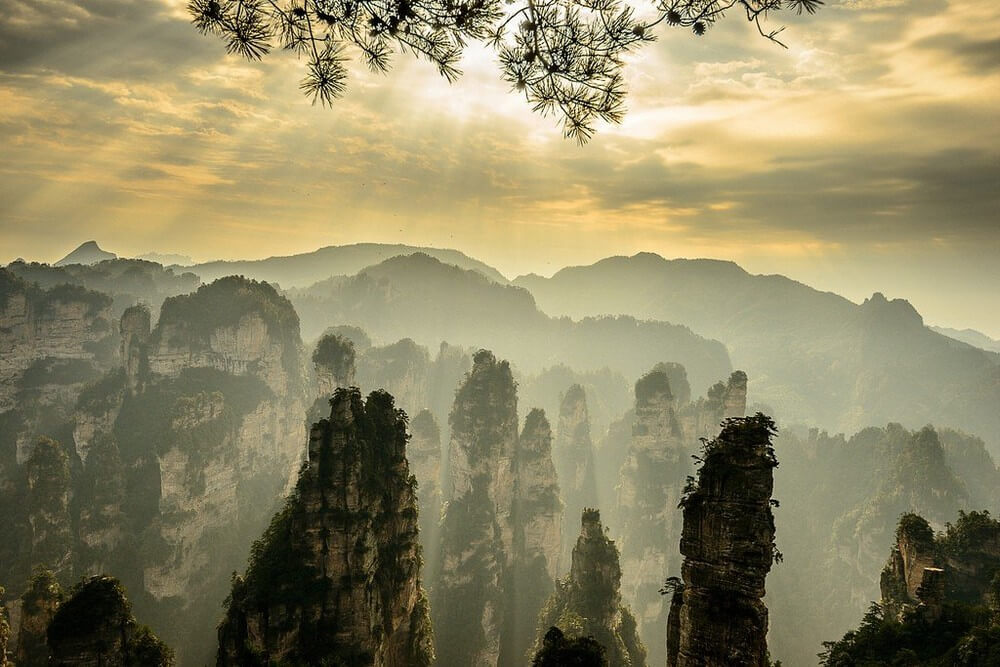
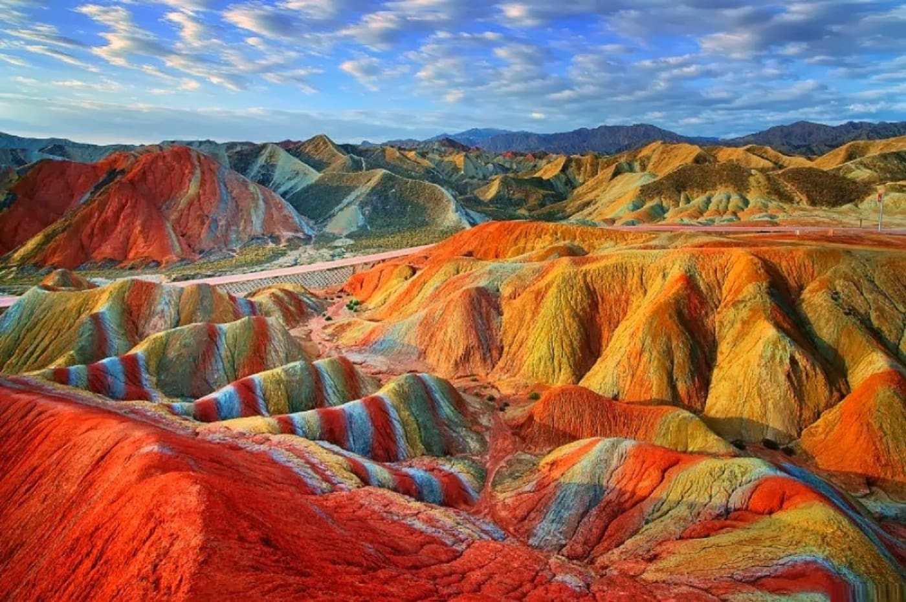
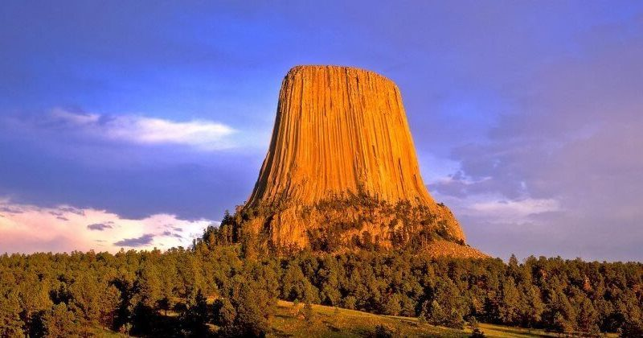
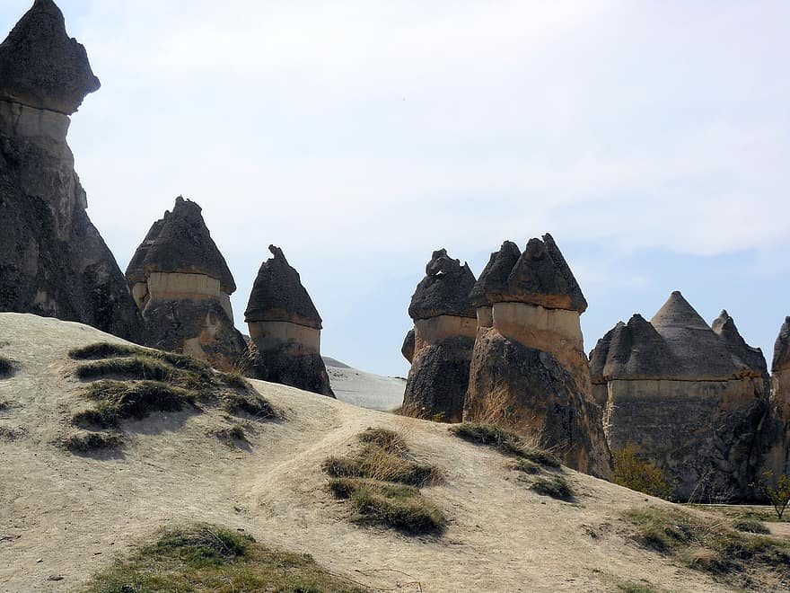
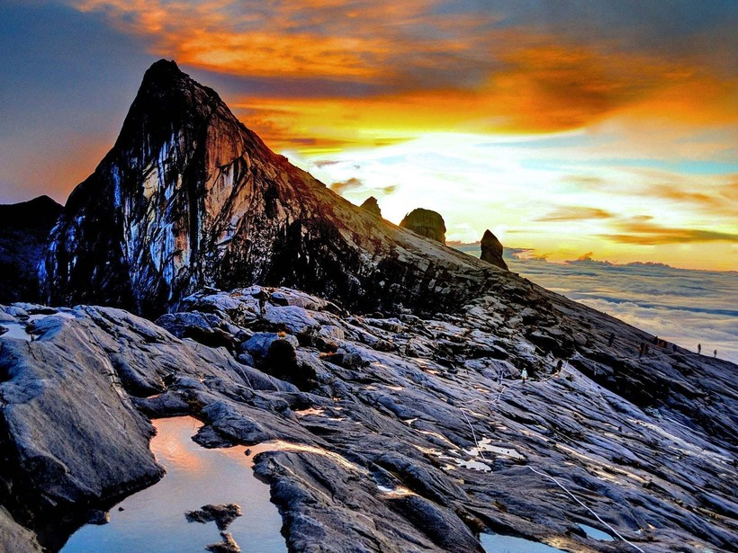
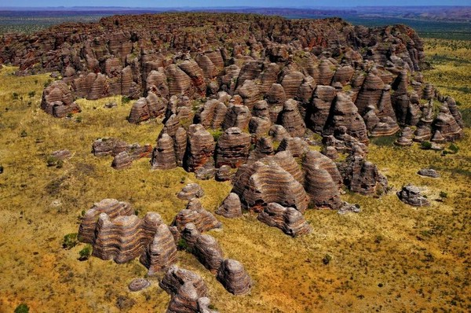
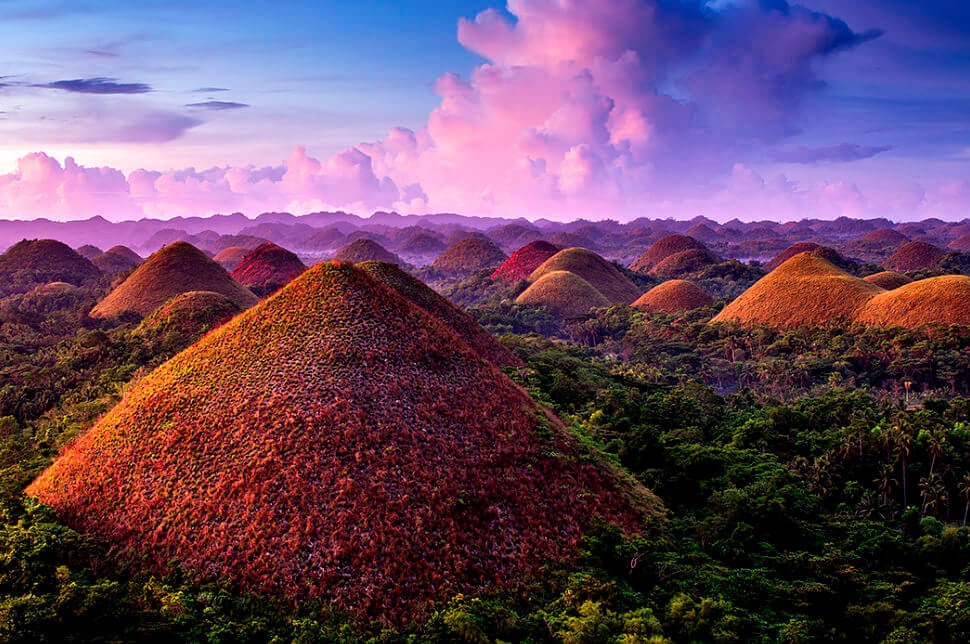

Чжанцзяцзе (Zhangjiajie), “Горы Аллилуйя”, Китай
Если эти таинственные колонны из кварца и песчаника в национальном лесном парке Чжанцзяцзе кажутся вам знакомыми, ничего удивительного. Один из самых высоких из 3000 столбов в парке был ранее назван «Колонна Южного неба», но был официально переименован в «Avatar Hallelujah Mountain» в честь фильма «Аватар». Именно эти горы послужили творческим вдохновением для плавающих пиков в фильме Джеймса Кэмерона.
Радужные горы, Китай
Китайские красочные Радужные горы выглядят как произведение искусства. Расположенные в Zhangye Danxia Landform Geological Park, пики достигают нескольких сотен метров. Необычные цвета - результат слияния песчаника и минералов более 24 миллионов лет назад.
Ба́шня дья́вола, США
Расположенная в горах Bear Lodge, в долине реки Белл-Фурш на территории штата Вайоминг, гора представляет собой монолит вулканического происхождения высотой 1558 м над уровнем моря и относительной высотой 265 м. Башня Дьявола была первым официально объявленным Национальным памятником Соединенных Штатов. Огромную славу горе принесли съемки на местности классического фильма Стивена Спилберга «Близкие встречи третьего сорта». С тех пор это популярная туристическая достопримечательность.
Сказочные Дымоходы, Каппадокия, Турция
Хотите взобраться на вершину одного из этих молодцов? Если вы думаете, о чем мы думаем, то, вероятно, нет. Эти "дымоходы" в регионе Каппадокии в Турции являются результатом потоков лавы из вулканических извержений. Несколько веков назад, монахи, живущие там, выдолбили в некоторых из них пространства и превратили их в дома. Один монах даже жил на вершине такого столба.
Гора Кинабалу, Малайзия
Вертикальное расстояние между вершиной горы Кинабалу (4092 м) и самой низкой контурной линией, окружащей ее на карте, заработало ей титул 20-й самой выдающейся горы в мире. Расположенная в национальном парке Кинабалу в Малайзии на острове Борнео, гора и ее окрестности служат домом для орангутанов и являются одним из самых разнообразных биологически мест на Земле.
Горный хребет Бангл-Бангл, Австралия
Появляясь из земли как гигантские ульи, эти куполообразные башни в австралийском Bungle Bungle Range хрупки, и восхождение на них строго запрещено! Они расположены в Национальном парке Пурнулулу, местности, служившей домом аборигенам более 20 000 лет.
Шоколадные холмы, Филиппины
В Филиппинской провинции Бохол насчитывается более 1260 шоколадных холмов, расположенных на площади в 50 квадратных километров. Они получили свое название, потому что зеленая трава, покрывающая их, становится шоколадно-коричневого цвета в течение сухого сезона, покрывая холмы сотнями шоколадных поцелуев. Самый высокий холм - всего 120 метров.